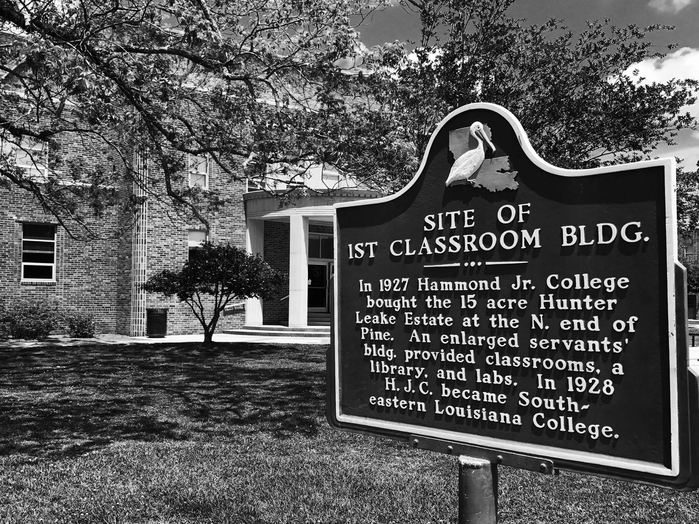
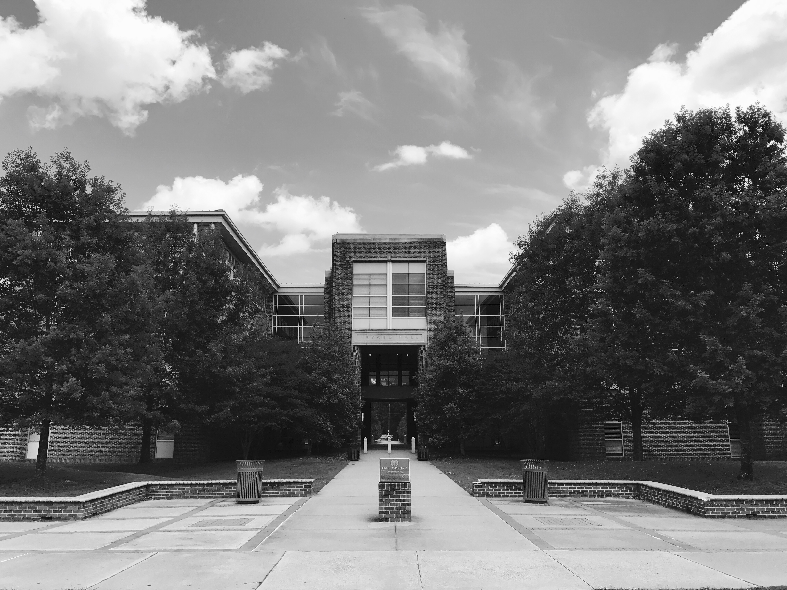

More About Us
The Pick is Southeastern Louisiana University’s official published journal, featuring works of an exceptional nature from both undergraduate and graduate students, which have been originally written in fulfillment of the school’s required curriculum. A collaborative effort between the English Department and the Southeastern Writing Center, The Pick has been publishing standout material since 1939. Submissions can be sent throughout the year, and are initially reviewed by fellow students. The contributors of those standout works which are accepted for publication may then meet with the editor for a revision process. Finally, a faculty review will be conducted to confirm the quality of each accepted work.


Contact Us
Visitors are welcome to the Writing Center, located in D. Vickers Hall, room 210, and can obtain current editions of The Pick, as well as guidelines and submission forms. Members of the faculty are encouraged to submit works from their students which they deem exceptional, or students may also contribute assignments with an instructor’s recommendation.
The Pick can be reached by email at thepick@southeastern.edu or by telephone at
(985) 549-2076.